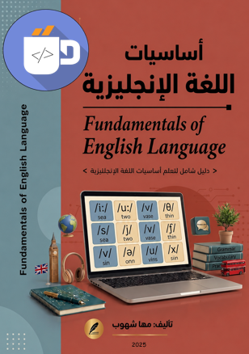

النسخة الرسمية المعتمدة من سلسلة أساسيات التقنية

أساسيات برمجة
👁️ عدد القراءات: 350

أساسيات شبكات
👁️ عدد القراءات: 2000

هياكل البيانات
👁️ عدد القراءات: 500

لغة HTML5
👁️ عدد القراءات: 266

مكونات الحاسب الآلي
👁️ عدد القراءات: 319

اختصارات الكمبيوتر
👁️ عدد القراءات: 562

تقنية المعلومات
👁️ عدد القراءات: 727

جهاز الأفوميتر
👁️ عدد القراءات: 833

إصلاح أعطال الكمبيوتر
👁️ عدد القراءات: 254

أساسيات الويندوز
👁️ عدد القراءات: 75

قواعد اللغة الإنجليزية
👁️ عدد القراءات: 230

العناصر الإلكترونية
👁️ عدد القراءات: 140

هندسة كمبيوتر
👁️ عدد القراءات: 165

أساسيات الأمن الرقمي 1
👁️ عدد القراءات: 180

أساسيات الأمن الرقمي 2
👁️ عدد القراءات: 195

أساسيات الخوارزميات
👁️ عدد القراءات: 215

تحليل وتصميم النظم
👁️ عدد القراءات: 0

منهجيات البحث العلمي
👁️ عدد القراءات: 0